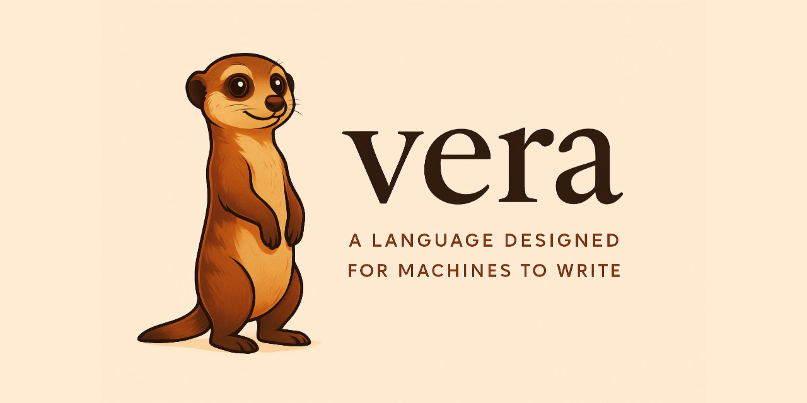

Current Version: v0.0.108 

A programming language designed for LLMs to write, not humans.
From the Latin veritas — truth. In Vera, verification is a first-class citizen.
Current Version: v0.0.108 
Programming languages have always co-evolved with their users. Assembly emerged from hardware constraints. C from operating systems. Python from productivity needs. If models become the primary authors of code, it follows that languages should adapt to that too.
The evidence suggests the biggest problem models face isn't syntax, instead it's coherence over scale. Models struggle with maintaining invariants across a codebase, understanding the ripple effects of changes, and reasoning about state over time. They're pattern matchers optimising for local plausibility, not architects holding the entire system in mind. The empirical literature shows that models are particularly vulnerable to naming-related errors — choosing misleading names, reusing names incorrectly, and losing track of which name refers to which value.
Vera addresses this by making everything explicit and verifiable. The model doesn't need to be right, it needs to be checkable. Names are replaced by structural references. Contracts are mandatory. Effects are typed. Every function is a specification that the compiler can verify against its implementation.
For deeper questions about the design — why no variable names, what gets verified, how Vera compares to Dafny, Lean, and Koka — see the FAQ.
@T.n), not arbitrary names.@T.n) replace traditional variable names, eliminating naming hallucinations"\(@Int.0)" with auto-conversion for all primitive typesMdBlock and MdInline ADTs for structured document processingJson ADT with parse, query, and serialize — typed API integration with contract-checked responsesHtmlNode ADT with lenient parsing, CSS selector queries, and text extraction — typed web scraping for agentsHttp.get and Http.post as algebraic effects — network I/O is explicit, typed, and composes with JSON for verified API accessInference.complete as an algebraic effect — model calls are typed, contract-verifiable, and mockable; supports Anthropic, OpenAI, and MoonshotFuture<T> with declared <Async> effects, integrated into the effect systemEq, Ord, Hash, Show) with forall<T where Eq<T>> constraint syntax and ADT auto-derivationNothing is implicit. The signature declares parameter types, return type, preconditions, postconditions, and effects. The compiler verifies the contract via SMT solver. Division by zero is not a runtime error — it is a type error.
public fn safe_divide(@Int, @Int -> @Int) requires(@Int.1 != 0) ensures(@Int.result == @Int.0 / @Int.1) effects(pure) { @Int.0 / @Int.1 }
String interpolation, conditionals, and the @T.n slot reference system — in a program everyone recognises. There are no naming decisions to make, and none to hallucinate.
public fn fizzbuzz(@Nat -> @String) requires(true) ensures(true) effects(pure) { if @Nat.0 % 15 == 0 then { "FizzBuzz" } else { if @Nat.0 % 3 == 0 then { "Fizz" } else { if @Nat.0 % 5 == 0 then { "Buzz" } else { "\(@Nat.0)" } } } }
Both functions above are effects(pure) — the compiler has proved they perform no side effects of any kind. This matters because effects compose. When a function calls an LLM, the <Inference> effect appears in its signature. An LLM writing code that uses another LLM declares it explicitly.
public fn classify_sentiment(@String -> @Result<String, String>) requires(string_length(@String.0) > 0) ensures(true) effects(<Inference>) { let @String = string_concat("Classify as Positive, Negative, or Neutral: ", @String.0); Inference.complete(@String.0) }
Postconditions can constrain the model’s output. Z3 cannot know what a model will return at compile time, so the contract is checked at runtime — if the model returns an empty string, the program traps with a contract violation rather than silently propagating garbage.
public fn safe_classify(@String -> @String) requires(string_length(@String.0) > 0) ensures(string_length(@String.result) > 0) effects(<Inference>) { let @Result<String, String> = classify_sentiment(@String.0); match @Result<String, String>.0 { Ok(@String) -> @String.0, Err(@String) -> "Neutral" } }
Compose with Http to fetch, then reason. The <Http, Inference> annotation enforces the boundary — a caller that only permits <Http> cannot invoke this function, and a caller that only permits <Inference> cannot invoke it either. Both must declare the full effect row.
public fn research_topic(@String -> @Result<String, String>) requires(string_length(@String.0) > 0) ensures(true) effects(<Http, Inference>) { let @Result<String, String> = Http.get(string_concat("https://en.wikipedia.org/w/api.php?action=query&titles=", @String.0)); match @Result<String, String>.0 { Ok(@String) -> Inference.complete(string_concat("Summarise this in one paragraph:\n\n", @String.0)), Err(@String) -> Err(@String.0) } }
Supports Anthropic, OpenAI, and Moonshot — provider auto-detected from whichever API key is set. Run with VERA_ANTHROPIC_API_KEY=sk-ant-... vera run examples/inference.vera.
When you get it wrong, every error is an instruction for the model that wrote the code — what went wrong, why, how to fix it, and a spec reference.
[E001] Error at main.vera, line 14, column 1: { ^ Function is missing its contract block. Every function in Vera must declare requires(), ensures(), and effects() clauses between the signature and the body. Vera requires all functions to have explicit contracts so that every function's behaviour is mechanically checkable. Fix: Add a contract block after the signature: private fn example(@Int -> @Int) requires(true) ensures(@Int.result >= 0) effects(pure) { ... } See: Chapter 5, Section 5.1 "Function Structure"
This principle applies at every stage: parse errors, type errors, effect mismatches, verification failures, and contract violations all produce natural language explanations with actionable fixes.
Vera compiles to WebAssembly. The same .wasm binary runs at the command line via wasmtime or in any browser with a self-contained JavaScript runtime.
$ vera run examples/hello_world.vera Hello, World! $ vera run examples/factorial.vera --fn factorial -- 10 3628800
vera run compiles to WASM and executes via wasmtime. Use --fn to call any public function and pass arguments after -- on the command line.
$ vera compile --target browser examples/hello_world.vera
Browser bundle: examples/hello_world_browser/
module.wasm
runtime.mjs
index.html
The browser bundle is self-contained — no build step or bundler needed. Serve the output directory with any HTTP server (python -m http.server) and open index.html. IO.print writes to the page, IO.read_line uses prompt(), and all other operations work identically to the CLI runtime. Mandatory parity tests enforce this on every PR.
Note: Inference.complete returns an error in the browser — API keys cannot be safely embedded in client-side JavaScript. The recommended pattern is a server-side proxy called via the Http effect.
Python 3.11+ and Git. Everything else installs into a virtual environment.
# Clone and install git clone https://github.com/aallan/vera.git cd vera python -m venv .venv source .venv/bin/activate pip install -e ".[dev]" # Check a program vera check examples/absolute_value.vera # Verify contracts via Z3 vera verify examples/safe_divide.vera # Compile and run vera run examples/hello_world.vera # Compile for the browser vera compile --target browser examples/hello_world.vera
Download a Vera .tmbundle file to add syntax highlighting to TextMate.
TextMate is a trademark of MacroMates
Install the Vera VS Code extension for syntax highlighting in Visual Studio Code.
Visual Studio Code is a trademark of Microsoft
Vera ships with three files for LLM agents:
SKILL.md — Complete language reference for agents writing Vera code. Covers syntax, slot references, contracts, effects, common mistakes, and working examples.
AGENTS.md — Instructions for any agent system (Copilot, Cursor, Windsurf, custom). Covers both writing Vera code and working on the compiler.
CLAUDE.md — Project orientation for Claude Code. Key commands, layout, workflows, and invariants.
If you're working in the Vera repo, Claude Code discovers SKILL.md and CLAUDE.md automatically. For other projects to give Claude access to the Vera language you can install the skill manually:
mkdir -p ~/.claude/skills/vera-language cp /path/to/vera/SKILL.md ~/.claude/skills/vera-language/SKILL.md
The skill is now available across all your Claude Code projects. Claude will read it automatically when you ask it to write Vera code. For other models, point the model at SKILL.md by including it in the system prompt, as a file attachment, or as a retrieval document. The file is self-contained and works with any model that can read markdown.
A 50-problem benchmark across 5 difficulty tiers, measuring whether LLMs write better code in a language designed for them. Six models, three providers, four modes each.
| Model | Vera | Python | TypeScript |
|---|---|---|---|
| Kimi K2.5 flagship | 100% | 86% | 91% |
| GPT-4.1 flagship | 91% | 96% | 96% |
| Claude Opus 4 flagship | 88% | 96% | 96% |
| Kimi K2 Turbo sonnet | 83% | 88% | 79% |
| Claude Sonnet 4 sonnet | 79% | 96% | 88% |
| GPT-4o sonnet | 78% | 93% | 83% |
In our latest results Kimi K2.5 writes perfect Vera code — 100% run_correct, beating both Python (86%) and TypeScript (91%), alongside that we see that Kimi K2 Turbo also writes better Vera than TypeScript. While in our previous v0.0.4 benchmark, Claude Sonnet 4 wrote Vera better than TypeScript (83% vs 79%) this result flipped in the latest v0.0.7 re-run above illustrating the variance inherent in single-run evaluation.
It seems like Vera's mandatory contracts and typed slot references provide enough structure to compensate for zero training data. However it is still early days, just 50 problems, and one run per model. Stable rates will require pass@k evaluation with multiple trials.
Results from VeraBench v0.0.7 against Vera v0.0.108. Five tiers from pure arithmetic through ADTs, recursion, and multi-function effect propagation.